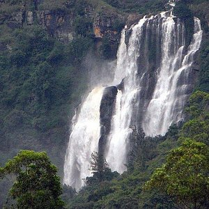

Adam’s Peak (Sri Pada) is a mountain located in the central highlands of Sri Lanka. It stands at 2,243 meters (7,359 feet) and is considered one of the highest points on the island. The peak is most famous for the large, mysterious footprint at the summit, which is regarded as a sacred site by multiple religious groups, making it a prominent pilgrimage destination.
Colombo Fort City
Fort City in Colombo is one of the most significant and vibrant districts in Sri Lanka’s capital. Originally established by the Portuguese in the 16th century and later fortified by the Dutch and British, it played a pivotal role in Colombo’s colonial history. The name "Fort" comes from the fortifications that once surrounded the area, although most of these structures have been dismantled over time.
Nayinatheevu Temple
Nayinatheevu Temple is a peaceful and historically rich Buddhist site located on Nainativu Island in northern Sri Lanka. Its association with the Buddha's visit, along with its serene atmosphere, makes it a significant pilgrimage destination for Buddhists. The temple’s natural beauty, architectural simplicity, and spiritual significance draw visitors seeking a connection to Sri Lanka’s ancient Buddhist heritage.

Bomburu Ella
Bomburu Ella is a stunning natural wonder, offering a peaceful retreat into Sri Lanka’s highland forests. Its multi-tiered cascade, surrounded by lush greenery and tea plantations, makes it a popular destination for both locals and tourists seeking beauty, tranquility, and a bit of adventure. Whether you're visiting for a hike or simply to enjoy the view, Bomburu Ella is a perfect spot for nature enthusiasts.
Ruwanweli saya
Ruwanwelisaya is a majestic and highly revered stupa in Anuradhapura, Sri Lanka. Built by King Dutugemunu, it symbolizes devotion to Buddhism and serves as a major pilgrimage site for Buddhists worldwide. Its architectural grandeur, sacred relics, and historical significance make it a central and powerful landmark in Sri Lanka’s religious and cultural landscape.
Colombo City
Colombo is a dynamic city that represents Sri Lanka’s blend of tradition and modernity. With its rich colonial history, cultural diversity, and growing economy, it is a city that continues to evolve while preserving its heritage. Whether you're exploring its historic temples, bustling markets, or modern commercial districts, Colombo offers a fascinating glimpse into the heart of Sri Lanka.
Nallur Temple
Nallur Kandaswamy Kovil, commonly known as Nallur Temple, is one of the most significant and revered Hindu temples in Sri Lanka. Located in Jaffna, the northern part of the island, the temple is dedicated to Lord Murugan (also known as Kartikeya), the Hindu god of war. The temple is an important spiritual center for the Tamil Hindu community and attracts pilgrims from all over the country and abroad!
Mihintale Rock
Mihintale Rock is a prominent feature of the Mihintale complex, located in the Anuradhapura District of Sri Lanka. Known for its historical and religious significance, it is a popular destination for both pilgrims and tourists. The rock holds immense cultural value as it is believed to be the site where Mahinda, the Buddhist missionary sent by Emperor Ashoka of India, first met King Devanampiyatissa in the 3rd century BCE, marking the introduction of Buddhism to Sri Lanka.
Ella
Ella is a scenic gem in Sri Lanka’s Central Highlands, offering an ideal mix of nature, adventure, and cultural heritage. With its breathtaking hikes, waterfalls, tea plantations, and historical sites, Ella is a must-visit destination for anyone seeking to experience the tranquility and beauty of Sri Lanka’s mountain regions. Whether you're an adventure enthusiast, a history buff, or someone looking to unwind amidst nature, Ella has something for everyone.